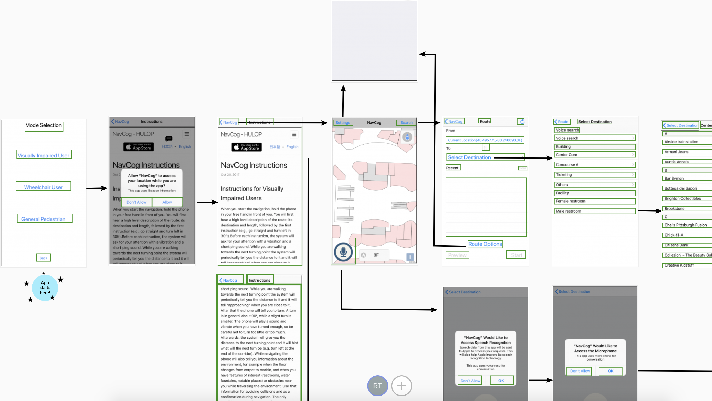
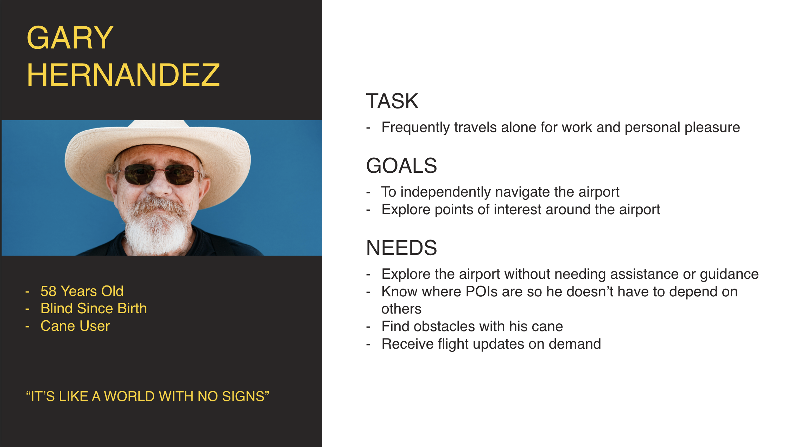
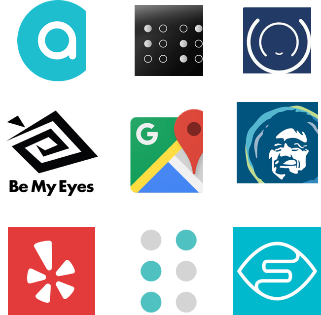
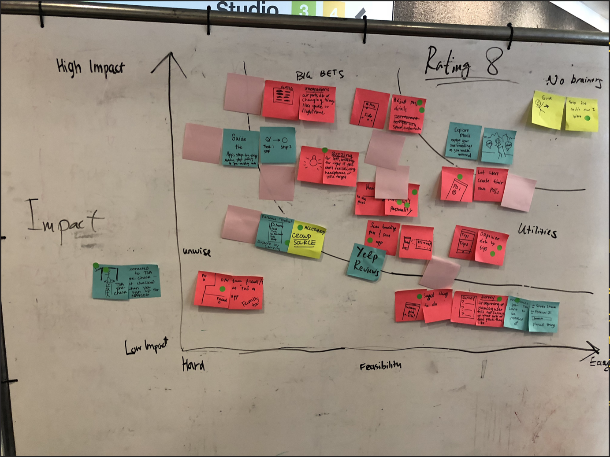
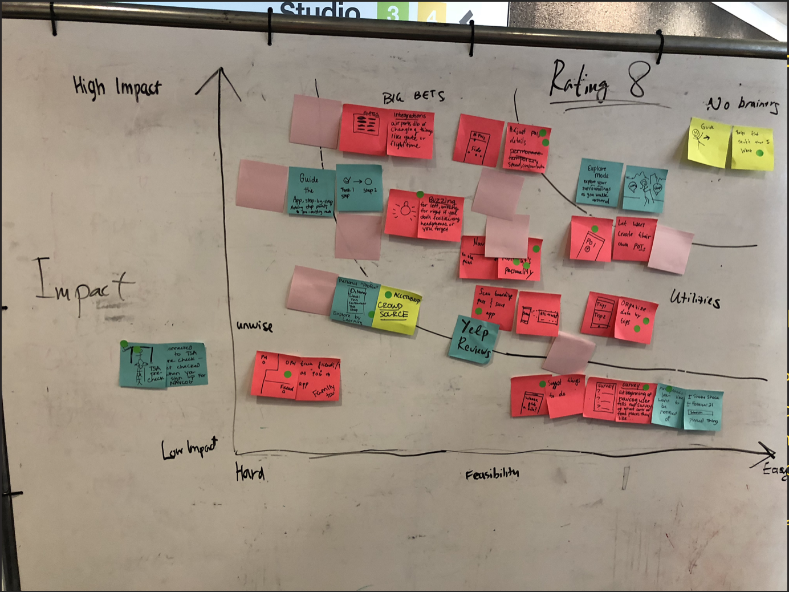
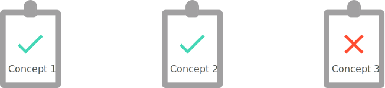
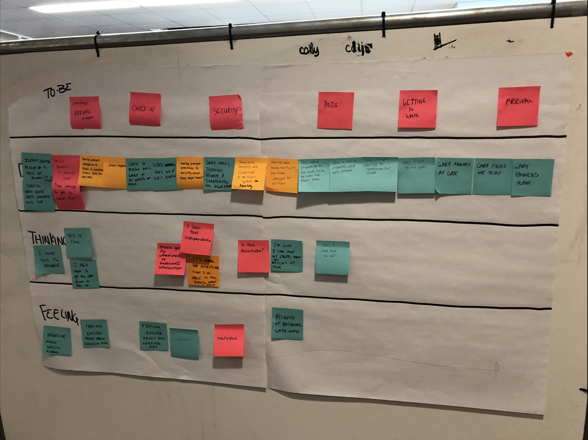
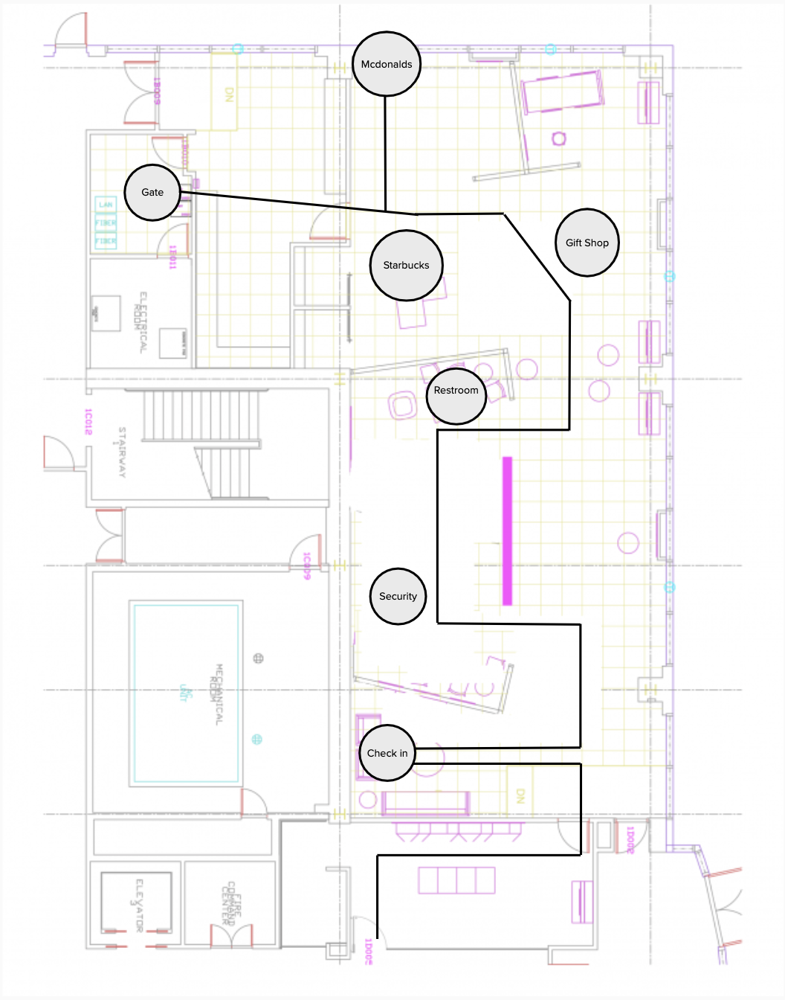
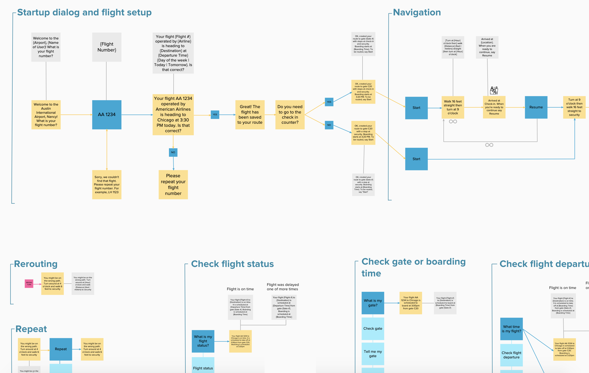
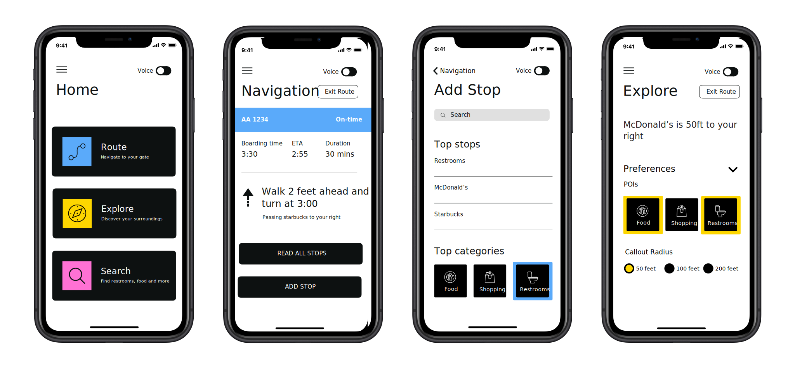

- Date: July 2018 - August 2018
- Role: Voice UX Designer
- Work Setting: Team of 7
As part of an incubator project in collaboration with IBM Research, my team was tasked with making airports more accessible for people who are blind or have low vision. We used design thinking to understand our user's needs and align with our key stakeholders. Our final solution comprised of a voice-first mobile app, which worked in conjunction with BLE beacons for accurate indoor location. During the project, we gathered insights from travelers who are blind and we were able to use our research findings to turn a POC prototype into a voice-first solution that addresses the user needs.
We were given an existing research prototype app and were tasked with making it more usable and useful. The app had been used during a controlled study deployment in a shopping mall, but the focus was now shifted to airports. The redesigned app was targeted to be deployed at multiple airports and gradually expanded in the future to other venues, including the Tokyo 2020 Olympics. We were given the freedom to discover user needs and reimaging the user interface and features of the app.
As we were gearing up to redesign the existing prototype, we wanted to gain a good understanding of what how it currently worked. To do that, we constructed an interaction map, while also marking the focus regions that would be used by a mobile screen reader. Since our users would use a screen reader, we wanted to get a realistic feel of what ti is like to use the prototype. One of the main issues with the current implementation that we encountered was that it is too reliant on touch gestures, which makes the app very hard to use with a screen reader.

{kind=link}
We were able to leverage our organization's existing relations to get access to travelers who are blind or hard of seeing. For our initial exploratory research, we focused on understanding the needs of blind travelers and the current solutions they use. We conducted initial user interviews with 5 people who are blind or have low vision. We were able to learn about their challenges they face while traveling.
We created an empathy map to get a better understanding of who our target audience is and what their feelings and behaviors are. The empathy map was effective at aligning us on what we do and don't know about our users. It got us thinking about guide dog vs white cane users, as well as people who are blind vs low vision. These areas would become scoping challenges that we would have to address for our solution.

Then, we created a user persona to represent our target audience. Due to the time limitations of our project, we had to scope our focus to people who are blind and use a white cane as an aiding tool. We acknowledge that low vision and guide dog users were still to be targeted by our solution, but recommended that deeper focus be put onto those users in future iterations of the product. This decision was not easy, but we had to scope the project, as we only had 6 weeks to complete the work.
Part of the decision to focus on blind users, as opposed to low vision users was done, as focusing on people who are blind would also implicitly cover to some extent a user that is on the low vision spectrum. As per the white can vs guide dog users, that decision was primarily made, due to the fact that there are a lot more people using canes, then there are people that can afford a guide dog. In addition, the all guide dog users that we spoke to also used canes.

{kind=link}
In addition to our user research, we also conducted a competitive analysis in a few important dimensions: accessibility solutions, airline and general navigation apps. Our findings showed us how the problems we are tackling are currently being addressed. This information was useful in helping guide our solution later.

To understand the current journey of our users, we constructed an As-is journey map of their independent travels. We focused on the end-to-end journey from deciding to go a trip, to reaching their final destination. We also worked with our research participants to identify pain points along the journey, which would become the focus of our solution. Due to time constraints, we had to work individually with each participant in parallel. This led to different degrees of data being available and steps missing from some journeys. Before we consolidated the data, we had to do quick verifications and clarifications with some participants and ensure we are not making assumptions.

To help decide on our design objectives and strategy, we wrote up hills, which aim to express the actionable, user-centered goals that our design would strive to achieve. Here are our 3 hills, which we used to scope and align around our design:
- Gary can search for points of interest such as a restaurant or the restroom without asking for assistance.
- Gary can access flight information on-demand in the NavCog app so that he will be notified of any flight changes.
- Gary can explore the airport by walking around without asking for assistance.
As as brainstorming exercise, we used big ideas. Through this activity, We were able to generate ideas that aimed to address design objectives. Then, we put our ideas on a prioritization grid, in order to the top concepts.
 

{kind=link}
After ideating and prioritization, we didn't feel 100% confident in our concepts. That is why we conducted a concept validation session with our target users. We wanted to validate the following:
- Are we fixing the right problems?
- Do our solutions seem useful?
- Which ideas should we prioritize?
- What should we keep in mind when designing?

With our direction decided, we constructed a revised user journey, which featured our new design. The let us visualize what our target interaction flow and what our goal was for how our design would help the users.

{kind=link}
Since our target audience is made up of people who are blind or hard of seeing, we chose a voice-first solution. The lack of visual screen as a primary interaction method allowed us to design a solution that mitigates the effects of users having low or no vision.
{kind=link}
{kind=link}
We knew that user testing would be a challenge, because we did not have an airport at our disposal, and we could not use a traditional click-through prototype. To overcome these challenges, we ended up constructing a fake airport at our design studio. We used voice dictation and a wizard of oz style instructions to guide our participants on their path to the "gate". Since participants followed the voice instructions, we were able to use invisible walls that didn't really exist in reality. We were able to simulate multiple turns, walls, points of interest, and airport announcements.

{kind=link}
To conduct the test, we used a Mural that had pre-loaded all the system responses. We were able do a wizard of oz by using dictation from macOS. This allowed us to simulate the app's voice interface, responding to the participant's commands and movement. The test was very useful in informing us of the limitations of our navigation system and greatly aided our refinement efforts.
As our final deliverable, we created mid-fidelity prototypes. The voice interface prototype consisted of a mural that described the interaction flows. The Mural was design with the Watson Assistant technology in mind.

{kind=link}
We also designed a visual prototype for low-vision users. This was a secondary goal that we had the bandwidth to achieve, but the majority of our time ended up being spent on the voice design.
{kind=link}